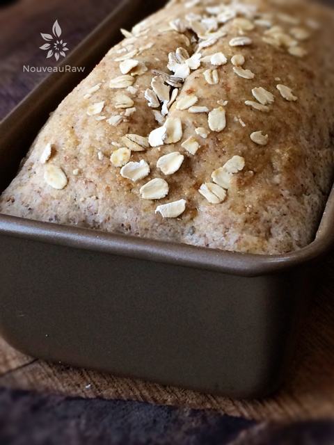

Honey Oat Bread

~ raw, vegan, gluten-free ~
I am so excited about this bread recipe that I could do cartwheels! This recipe is the closest to bread that I have ever tasted in the raw world! It is absolutely fantastic and so easy to make!
I took it out of the dehydrator, and while it was still warm, I spread some Raw Strawberry Date Jam on top, and for the first time in 4 years, I had a taste of some beautiful bread! Before I knew it, I had consumed two slices. The bread has a nice crunchy crust around the edges and is semi-soft inside. It doesn’t have the texture of Wonder Bread, but it is pretty darn amazing, and I don’t have one complaint!
I can’t wait to keep exploring new creations with this recipe. When I put this recipe together, my goal was to make it a neutral flavor, just like bread ought to be. Now sometimes bread is meant to stand on its own, packed with amazing flavors, but I wanted this to give me a hint flavor but for it to be in the background — the supporting cast of the play.
Before we dive into this recipe, let me share with you why I choose some of the ingredients that I did. The moist almond pulp is, by far, my favorite ingredient used in all of my raw bread recipes. It gives the bread a beautiful texture that is light and airy almost. I don’t recommend any substitute for it.
Ground flax is the binder of choice which holds the bread together nice and tight. If you don’t have flax or can’t consume it, you can use ground chia seeds in its place. Irish moss gives a spongy texture to the bread, which makes it feel pretty darn authentic. You can use 2-4 Tbsp of psyllium husks as a substitute if you wish.
Enjoy, and please let me know if you try this bread.
 Ingredients:
Ingredients:
Preparation:
- In a large mixing bowl, combine; oat flour, ground flax, seasoning, and salt. With your hands, mix all the dry ingredients.
- Add the water, almond pulp, Irish moss, honey, and lemon juice.
- Regarding the water… Start with 1/4 cup first and see if you need to add more. This will depend on how moist or dry the almond pulp is.
- Mix everything with your hands, working it into a nice dough.
- Shape the loaf… you can shape the loaf by hand into a circular or rectangle loaf. Or like me, you can press the dough into a bread pan, shape the top, and pop it out, leaving you a nicely shaped loaf.
- Place the whole loaf on the mesh sheet that comes with the dehydrator.
- Brush honey on top of the bread and sprinkle extra oats on top.
- Dehydrate at 145 degrees (F) for 1 hour to form a crunchy crust on your bread.
- Remove from the mesh sheet and place it on a cutting board.
- Slice the bread into desired thickness. I cut mine about 1″ thick.
- Lay bread slices back onto the mesh sheet and continue drying for about 4-6 hours at 115 degrees (F).
- Shelf life and storage: I recommendation to store this bread in an air-tight container, in the fridge, for 3-5 days. The more moisture that is left in your bread, the shorter the shelf life. Therefore, shelf life will vary with your drying technique. Whenever I make this bread, it never lasts very long enough to spoil. Keep in mind, the whole purpose of eating a raw diet is to eat foods at their peak of freshness, so don’t expect this bread to have an extended expiration date. This bread will also freeze wonderfully.
The Institute of Culinary Ingredients™
- Raw honey isn’t vegan, but I still use it now and again. Read (here) why I like to.
- Learn about the wonderful characteristics of Raw Coconut Nectar (here).
- Are oats gluten-free? Yes, read more about that (here).
- Are oats raw? Yes, they can be found. Click (here) to learn more.
- Do I need to soak and dehydrate oats? Not required but recommended. Click (here) to see why.
- Learn how to grind your own flaxseeds for ultimate freshness and nutrition. Click (here).
Culinary Explanations:
- Why do I start the dehydrator at 145 degrees (F)? Click (here) to learn the reason behind this.
- When working with fresh ingredients, it is essential to taste test as you build a recipe. Learn why (here).
- Don’t own a dehydrator? Learn how to use your oven (here). I do, however honestly believe that it is a worthwhile investment. Click (here) to learn what I use.

© AmieSue.com